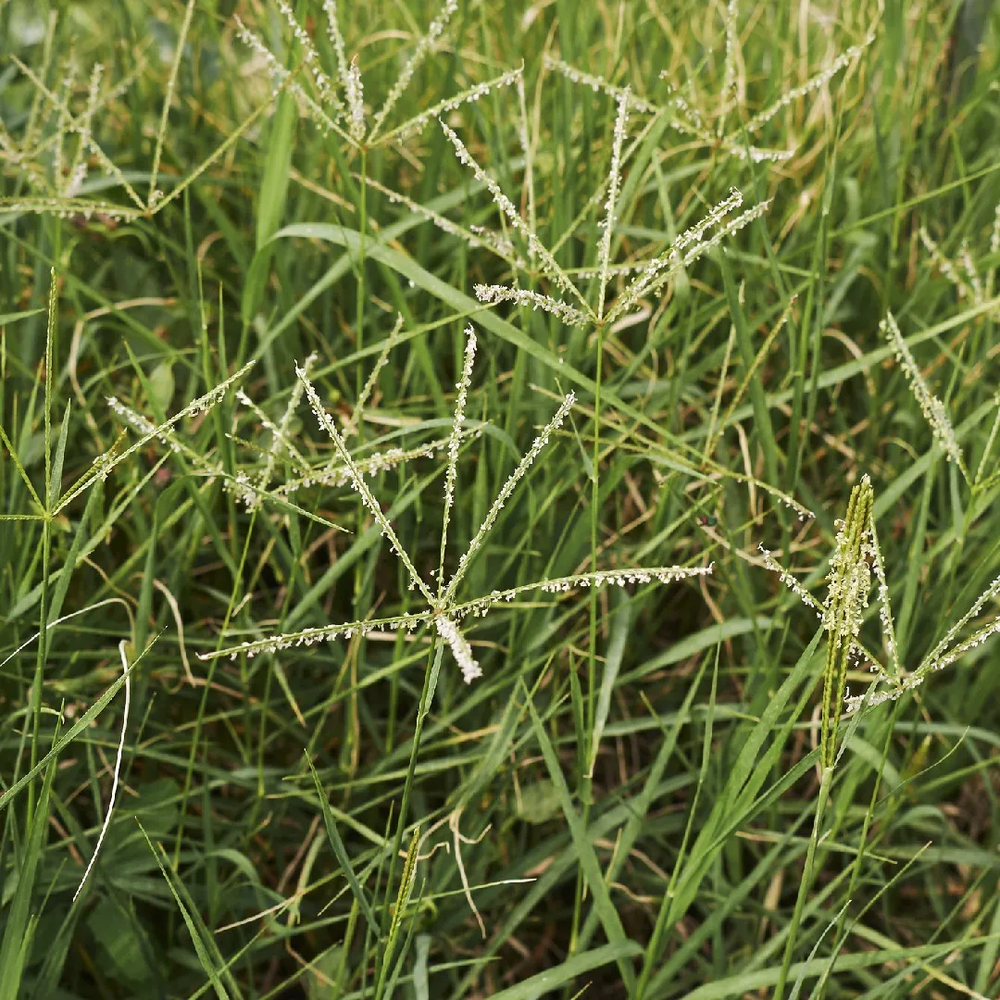

Ayuntamiento de Senés
JARDIN BOTANICO DE ESPECIES AUTOCTONAS DE SENES

Cynodon dactylon

La grama (Cynodon dactylon) es una planta herbácea perenne muy común en el ámbito mediterráneo, conocida por su crecimiento rastrero y su gran capacidad de expansión. Se caracteriza por formar densas alfombras vegetales mediante estolones y rizomas.
Presenta hojas estrechas y alargadas, de color verde, y tallos finos que se extienden sobre el suelo. Sus inflorescencias son pequeñas y se disponen en forma de dedos o espigas, muy características de esta especie.
La grama se distribuye ampliamente por regiones cálidas y templadas de todo el mundo. Crece en suelos compactados, terrenos alterados, campos y bordes de caminos.
En el entorno de Senés, es frecuente en suelos abiertos y zonas pisoteadas, formando parte de la vegetación espontánea.
La grama ha sido utilizada en medicina tradicional por sus propiedades diuréticas y depurativas, especialmente mediante infusiones de sus raíces.
También tiene valor ecológico por su capacidad para fijar el suelo y prevenir la erosión.
La grama simboliza la resistencia y la persistencia, debido a su capacidad para regenerarse y extenderse incluso en condiciones adversas.
Representa la continuidad y la fuerza de la naturaleza.
En Senés, la grama era conocida tanto por su capacidad invasora en cultivos como por sus usos tradicionales en infusiones. Para la salud se usaba como depurativo, para la gota, ictericia, reuma, celulitos, estreñimiento y sobretodo para calculos renales.
La receta utilizada para los calculos renales era cocer durante una hora en dos litros de agua: cincuenta gramos de raices de grama, treinta gramos de raices de achicoria, veinte gramos de cebada, y quince gramos de parietaria. Una vez templado el líquido, se filtra y conseva en una botella. Tomar dos o tres tazas al día, hasta que se llegue a la normalidad.
La grama florece principalmente en verano, produciendo pequeñas espigas características.
La grama es una de las plantas más resistentes al pisoteo, lo que la hace común en zonas transitadas.
Su sistema de crecimiento le permite regenerarse rápidamente tras ser cortada o dañada.